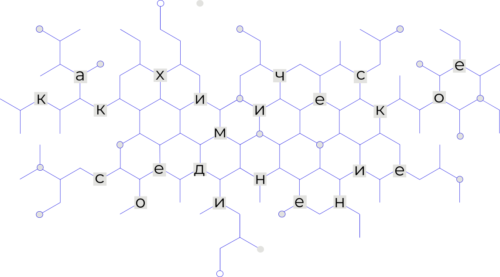
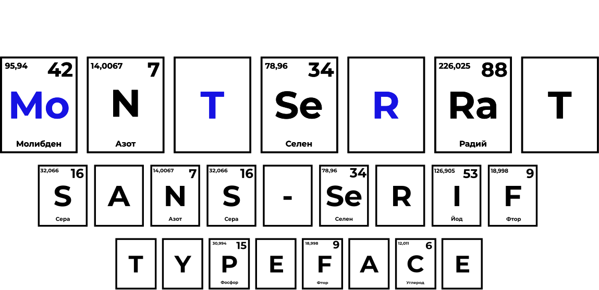
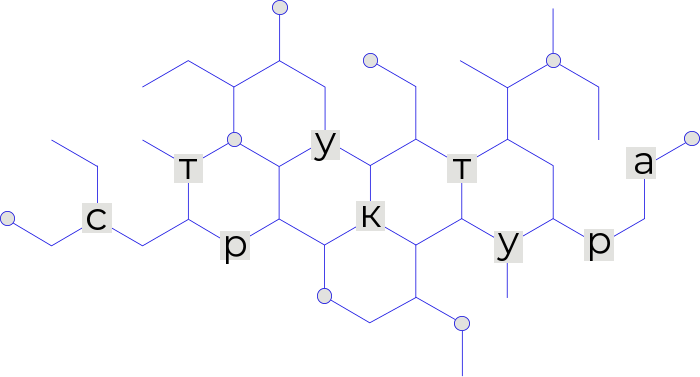
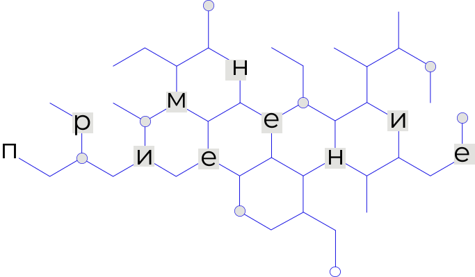
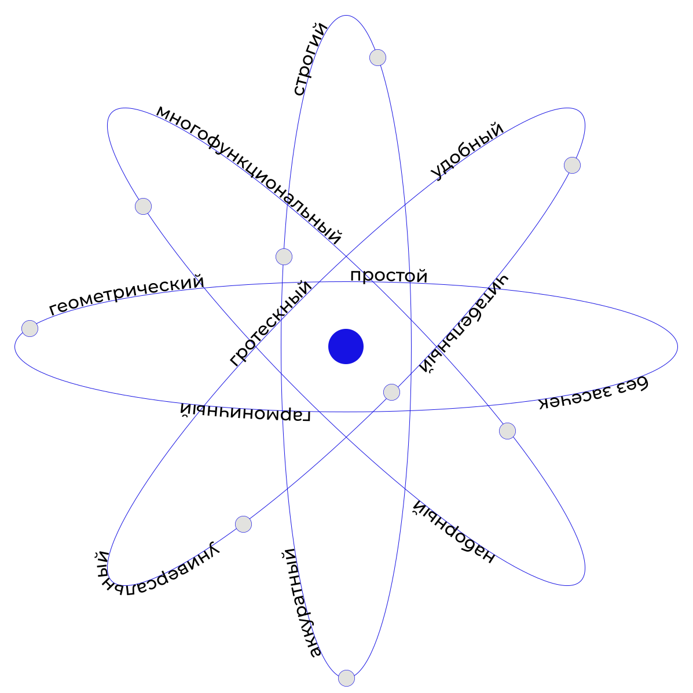
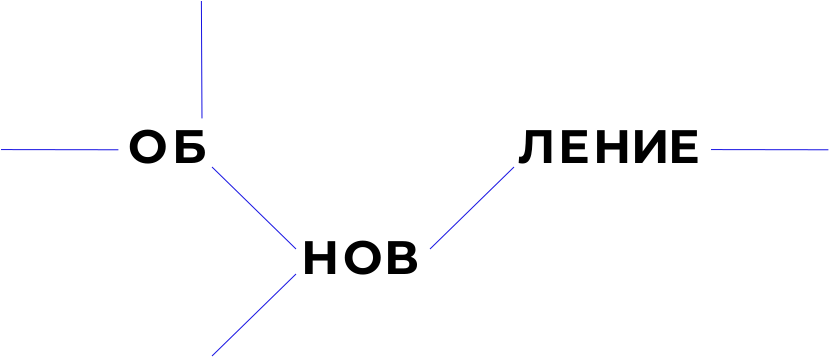
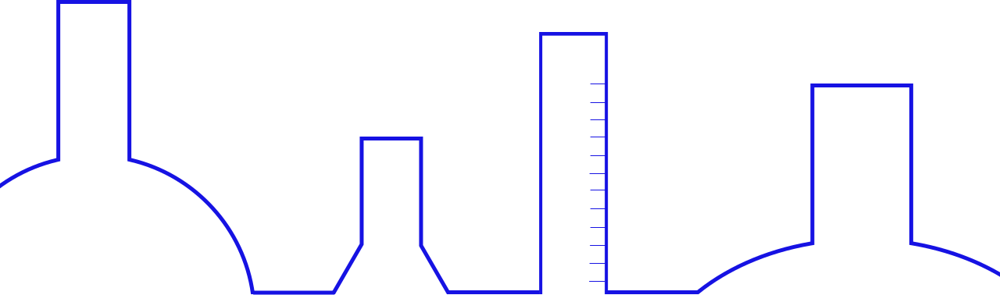

MONTSERRAT



MONTSERRAT — гротескный шрифт с примерно одинаковым соотношением ширины и высоты символов.
Шрифт имеет все варианты начертаний от Thin до Black,
а также соответствующие курсивы.
Шрифт был создан Хульетой Улановски, дизайнером из Аргентины, одной из основательниц студии ZkySky.
Хульета вдохновлялась плакатами и вывесками старого района Монсеррат в Буэнос Айресе, поэтому шрифт отражает эстетику традиционной типографики Аргентины начала XX века.

Веб-типографика
Заголовки
Основной текст


В 2017 году гарнитура была перерисована целой командой шрифтовиков под руководством её автора. Все начертания улучшили и сделали более гармоничными.
Также гарнитура стала поддерживать кириллицу. Разработкой руководил Хуан Пабло дель Перал, который консультировался с русскими шрифтовиками.
